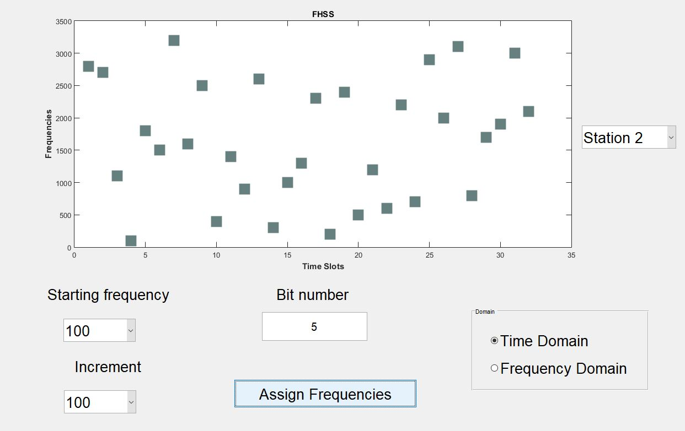

<h1 style="padding-left:4%;padding-top: 2%;padding-bottom: 2%;padding-right: 10%;border-bottom: 1px solid #BDBDBD;">


Frequency-Hopping Spread Spectrum Simulator


</h1>


MATLAB GUI based simulator


<h2></h2>




